DLP and TLP¶
对应教材Ch4, Ch5
0 Introduction¶
 SISD - 单指令流单数据流
SIMD - 单指令流多数据流（比如向量一次传递多种数据)
SISD - 单指令流单数据流
SIMD - 单指令流多数据流（比如向量一次传递多种数据)
- SIMD architectures can exploit significant data-level parallelism
- Matrix-oriented scientific computing
-
Media-oriented image and sound processors
-
SIMD is more energy efficient than MIMD
- SIMD allows programmer to continue to think sequentially
MIMD - 多指令流多数据流
1 SIMD: vector processor¶
1.1 Vector Processor处理模式¶
是处理的数据类型的分类，由不同的处理器处理不同的数据类型： * vector processor - 流水线处理器，用向量表示和处理数据 * scalar processor - 流水线处理器，不用向量表示和处理数据
通常有三种处理模式：
-
Horizontal processing method
-
Vector calculations are performed horizontally from left to right in a row.
横向计算，从左到右，逐个计算出后再进行下一行。对于混合运算，一直在做功能切换。
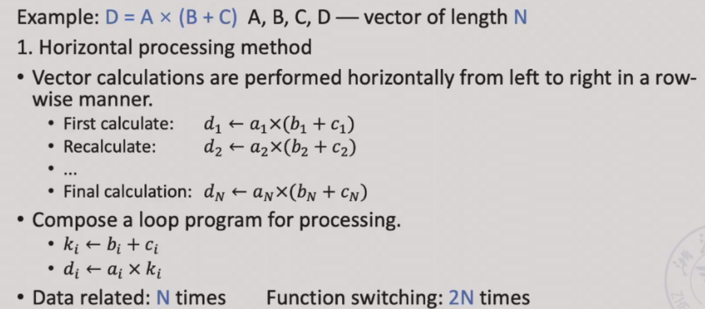
-
Problems with horizontal processing:
- When calculating each component, RAW correlation occurs, and the pipeline efficiency is low.
-
If a static multi-functional pipeline is used, the pipeline must be switched frequently; the throughput of the pipeline is lower than that of sequential serial execution.
如果是静态的多功能流水线，我们每次都要排空才能进行下一次运算，这样的效率很低。
-
The horizontal processing method is not suitable for vector processors.
-
Vertical processing method - 纵向计算
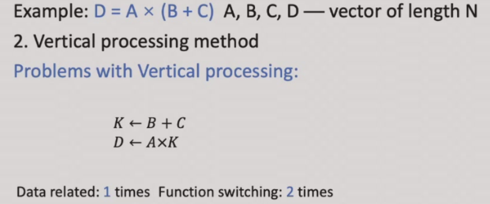
The vector calculation is performed vertically from top to bottom in a column manner.
要等加法全部都做完才能做乘法。
- Horizontal and vertical processing method(group processing method) - 分组计算，组内纵向，组间横向
Example
D = A \(\times\) (B + C) A, B, C, D ── vector of length N
-
Horizontal processing method
先计算 \(d_1\leftarrow a_1\times(b_1 +c_1)\)，再计算 \(d_2\leftarrow a_2\times(b_2 +c_2)\)，以此类推。写作循环可以写作：
\[ \begin{aligned} k_i & \leftarrow b_i+c_i\\ d_i & \leftarrow a_i \times k_i \end{aligned} \]循环里的两个语句存在数据相关。因此有 N 个数据相关，需要进行 2N 次功能切换。
-
Vertical processing method
先计算加法，B+C 得到一个向量 K，再计算乘法，A*K 得到 D。
\[ \begin{aligned} K & \leftarrow B + C\\ D& \leftarrow A\times K \end{aligned} \]这里只有 1 个数据相关，2 次功能切换。
-
Horizontal and vertical processing method
如果 N 太大了，我们不能用一个向量来直接装下所有数据，就需要多次运算。假设 \(N=S\times n +r\)，即我们把 N 个数据分成了 S 组，每组有 n 个数据，最后一组有 r 个数据。组内做纵向运算，组间做横向运算。
Requirements for processor structure: memory-memory structure.
源向量和目的向量都在内存中，中间结果也需要写回内存。

1.2 Vector Processor Example - Cray-1¶
1.2.1 基本架构¶

有 8 个向量寄存器，每组向量寄存器有 64 位。有 12 条单功能流水线，可以并行工作。

Each vector register Vi has a separate bus connected to 6 vector functional units.
不同的功能需要的拍数不同。
向量的指令也是可能存在相关性：
-
Vi conflict: The source vector or result vector of each vector instruction working in parallel uses the same Vi.
当向量寄存器有依赖的时候，后续指令要在前面指令的结果出来之后再执行。这里并不是等前面的向量的每一个元素都计算完，而是等前面的向量的第一个元素计算完就开始计算第一个元素的后续指令，等第二个元素计算完就开始计算第二个元素的后续指令，以此类推。
-
Writing and reading data related
\[ \begin{aligned} V0 & \leftarrow V1+V2\\ V3& \leftarrow V0\times V4 \end{aligned} \] -
Reading data related
\[ \begin{aligned} V0 & \leftarrow V1+V2\\ V3& \leftarrow V4\times V1 \end{aligned} \]
-
-
Functional conflict: Each vector instruction working in parallel must use the same functional unit.
\[ \begin{aligned} V3 & \leftarrow V1\times V2\\ V5& \leftarrow V4\times V6 \end{aligned} \]如果我们只有一个乘法部件，就会有结构冲突。我们只能等前一条指令全部完成（最后一个元素做完才可以），才能开始下一条指令。
1.2.2 Instruction Types of CRAY-1¶

- 向量和向量
- 向量和标量
- 向量读取
- 向量存储
向量加法需要 6 拍；乘法需要 7 拍；读写需要 6 拍。
1.2.3 Improve the Performance of Vector Processor¶
- Set up multiple functional units and make them work in parallel. - 增加功能部件采取并行机制
- Use link technology to speed up the execution of a string of vector instructions. - 链接技术
-
链接条件：后面的刚好要用到前面的且没有功能部件冲突，且两个操作数在同一拍准备好
-
Adopt recycling mining technology to speed up recycling processing.
- Using a multi-processor system to further improve the performance.
这里 1、3、4 都依赖于增加部件，我们将关注于第 2 种方法。
Link feature: It has two related instructions that are written first and then read. In the case of no conflicts between functional components and source vector conflicts, functional components can be linked for pipeline processing to achieve the purpose of speeding up execution.
如果我们有两条指令，第一条指令的结果是第二条指令的输入，那么我们就可以把这两条指令链接起来，这样就可以减少一次读写的时间。
Use link technology to perform vector operations on CRAY-1
D = A \(\times\) (B + C)；A, B, C, D ── vector of length N，假设 \(N\leq 64\)，均为浮点数，B 和 C 已经被存在 V0 和 V1 中。
1 2 3 | |
这里假设把数据从寄存器送到功能部件需要一拍，功能部件的结果写回到寄存器也需要一拍。把数据从内存送到 fetch function unit 需要一拍。

Question
计算下面的指令，假设三条指令串行执行；1 和 2 并行执行后执行 3；使用 link 技术，这三种情况下的拍数。
1 2 3 | |
-
The execution time using serial method.
经过 8 拍 V0 的第一个元素到达 V2，那么再过 (N-1) 拍 V0 的最后一个元素就会到达 V2。因此总共需要 [(1+6+1)+N-1] + [(1+6+1)+N-1] + [(1+7+1)+N-1] = 3N+22 拍。
-
The first two instructions are parallel, and the third is serial.
max{[(1+6+1)+N-1], [(1+6+1)+N-1]} + [(1+7+1)+N-1] = 2N+15
-
Use link technology.
我们只需要知道 V4 的第一个结果多久可以出来：8+1+7+1=9 拍，随后还有 (N-1) 条指令，因此总共需要的拍数为 max{(1+6+1), (1+6+1)} + (1+7+1)+N-1 = N+16.
1.3 现代向量处理机模型与技术¶
1.3.1 RV64V¶

- 以Cray-1为基础架构拓展出来的现代架构
- 32 62-bit vector registers
- Register file has 16 read ports and 8 write ports
- Vector functional units
- Fully pipelined
- Data and control hazards are detected
- Vector load-store unit
- Fully pipelined
- One word per clock cycle after initial latency
- Scalar registers
- 31 general-purpose registers
- 32 floating-point registers
DAXPY (Double Precision a*X plus Y)

因为循环之间没有迭代相关（和跨迭代循环的数据相关），所以可以转化为向量运算，大大减少了指令条数。
1.3.2 Multiple Lanes: Beyond One Element per Clock Cycle¶
多通道：每个时钟周期可以处理多个元素。

1.3.3 Gather-scatter: 使用向量结构处理矩阵运算¶
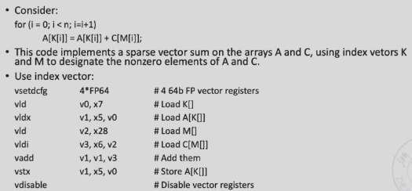
2 SIMD: array processor¶
多个处理器共同协作一个任务，必须有信息交流，需要组织处理器和内存的阵列。
N processing elements \(PE_0\) to \(PE_{N-1}\) are repeatedly set.
不同的阵列需要互相通信以连接。
ILLIAC IV

根据内存组织形式的分类：
- Distributed memory
- Centralized shared memory
2.1 Distributed memory - 分布式¶

PE 代表处理器，PEN 是其对应的内存，ICN 是一个内部的互联网络。
local的内存访问会快一点，访问其他的内存会慢一点。
2.2 Centralized shared memory - 集中共享式¶

网络之间会通过拓扑结构设计谁和谁联通。处理器对不同的内存没有特权之分。
2.3 Parallel computer design¶
cpu之间的交流体系是parallel computer的关键。
如果我们想让任何两个处理器都互相连接，如果都是直连，那么需要 $C_n^2 $ 个连接。
Definition: A network composed of switching units according to a certain topology and control mode to realize the interconnection between multiple processors or multiple functional components within a computer system.
网络中的节点代表一个处理器单元，每条边就代表一个连接。连接的通路越短就认为效率越高。
连接的东西包括 CPU，内存，接口，link and switch node。
- Interface: It is a device that obtains information from CPU and memory and sends information to another CPU and memory. Typical devices are network interface cards.
- Link: A physical channel to transmit data bits. The link can be a cable, twisted pair or optical fiber, it can be serial or parallel, and each link has its maximum bandwidth. The link can be simplex half-duplex and full-duplex, the clock mechanism used by the link can be synchronous or asynchronous.
- Switch node: It is the information exchange and control station of the interconnected network. It is a device with multiple input ports and multiple output ports which is able to perform data buffer storage and path selection.
Some key points
-
-
Static topology
静态网络：网络设定好后节点和边的连接方式就确定下来。
Topology of interconnection network - 网络的拓扑结构
-
Dynamic topology
动态网络：网络由很多开关组成，网络的连接方式会变化，如交叉开关我们拨动之后两个点的连接改变。
-
-
Timing mode of interconnection network - 时序
- Synchronization system: Use a unified clock. Such as SIMD array processor
- Asynchronous system: No uniform clock. Each processor in the system works independently
- Exchange method of interconnection network - 开关状态
- Circuit switching
- Packet switching
- Control Strategy of interconnection network - 控制方式
- Centralized control mode: have a global controller
- Distributed control mode: no global controller
-
Single-stage interconnection network: There are only a limited number of connections at the only level to realize information transmission between any two processing units.
单级网络，一个 PE 和另一个 PE 连在一起。最具体的连接方式、最基本的单元。
-
Multi-stage interconnection network: It is composed of multiple single-level networks in series to realize the connection between any two processing units.
多级网络。多个单级网络通过某种形式连接。
互联函数：N 个入端和 N 个出端会建立一个映射关系 \(j \leftrightarrow f(j)\)。用二进制表示。
2.4 Single-stage interconnection network¶
几个常用的单级的互联网络
1. Cube¶
假设有 N 个入端和出端，表示为 \(P_{n-1}\ldots P_1P_0\)。（用\(n\)位二进制表示，\(n = log_2N\)）
这里有 n 个不同的互联函数：（对第 i 位取反）
Example


3D Cube 里，任意两个点最远需要 3 步。对于 N 维的 Cube（超立方体网络），任意两个点最远需要 \(\log_2(N)\) 步。
2. PM2I¶
PM2I (Plus Minus 2i) single-stage network $$ PM2_{+i}(j)=(j+2^i)\mod N, PM2_{-i}(j)=(j-2^i)\mod N $$
实际上这里只有 \(2\log_2(N)-1\) 个不同的函数，因为 \(PM2_{+\log_2(N)}\) 与 \(PM2_{-\log_2(N)}\) 是一样的。
Example
Example: N = 8

任意两点最短的互联距离是 2。（0 可以一步到 1、2、4、6、7，再过一步可以到 3、5， 而 0 和任意一个节点是等价的）
3. Shuffle exchange network¶
混洗交换网络
Composed of two parts: Shuffle + Exchange
N-dimension shuffle function:
Example
可以看到这里 000 和 111 并没有与其他点连接，因此我们需要有更多的操作。

两次混洗：
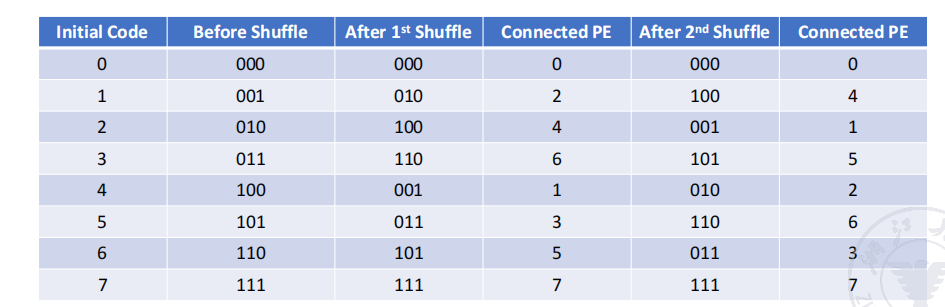
第三次混洗变回原来的样子。
可以看到经过 3 次 shuffle 后其他点都回到了原来的位置，但是 000 和 111 还是没有连接。因此我们在此的基础上加上 exchange 的连线（红色是通过 \(cube_0\) 实现的）。

在这里任意两个节点相连最多需要 5 步，3 exchanges + 2 shuffles.
函数简单，可以适用于n足够大的情况。
The maximum distance of shuffle exchange network: (from the nodes numbered all “0” to all “1”) n exchanges and n-1 shuffles, maximum distance: 2n-1 （\(n = log_2N\)）
中间节点的距离较短，效率高，除了从全 0 到全 1 的距离远。
Others¶
-
Linear array
开销低，但是每个点都是关键节点，一旦出现故障就会影响整个系统。

-
Circular array
任意一点断掉是不影响网络可用性的。

可以在点上加一些弦。

-
Tree array

可以拓展为带环的树（Tree with loop）、Binary fat tree

-
Star array
安全性较差，中间的节点非常重要。

-
Grid
格网络，在 GPU 中广泛使用。可以把蓝色的点视为开关控制。

可以拓展为 2D torus

-
Hypercube

Cube 也可以加上环（Cube with loop）


注意到这些都是静态网络。
2.5 Multi-stage interconnection network - 多级网络不考¶
// to be continued...
3 DLP in GPU¶
-
Heterogeneous execution model
-
Unify all forms of GPU parallelism as CUDA thread
- Programming model is “Single Instruction Multiple Thread” - 单指令流多线程，从流水线的假并行到了真的并行
GPUs are really just multithreaded SIMD Processors. - 多线程的SIMD，仍然归属福林分类法之一
Programming the GPU: CUDA¶
- CUDA: Compute Unified Device Architecture
Example

前提条件：没有跨循环的相关，可以转换为向量（并行）处理；
每一个循环迭代会转换为一个独立的线程。
Grid, Thread Blocks and Threads¶
- A thread is associated with each data element - 软件的程序员定义的
- Threads are organized into blocks - 硬件manage的
- Blocks are organized into a grid
GPU hardware handles thread management, not applications or OS.

GPU memory structures¶
- GPU memory is shared by all Grids (vectorized loops).
- Local memory is shared by all threads of SIMD instructions within a Thread Block (body of a vectorized loop).
- Private memory is private to a single CUDA Thread.


相比单纯的向量处理阵列（左），GPU（右）多了使用硬件实现的线程调度机制，更快速和稳定（成本也高）：
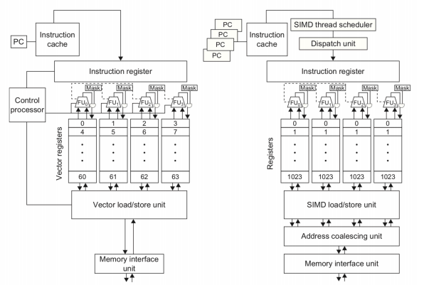
Loop-Level Parallelism (LLP)¶
做并行时不能有相互依赖。
Finding and manipulating loop-level parallelism is critical to exploiting both DLP and TLP, as well as the more aggressive static ILP approaches (e.g., VLIW).
Focuses on determining whether data accesses in later iterations are dependent on data values produced in earlier iterations.
Example
1 2 3 4 | |
Example
1 2 3 4 | |
交换 S1 S2，随后把第一次和最后一次运算提出去，可以改为下面这样，就可以并行。
1 2 3 4 5 6 | |
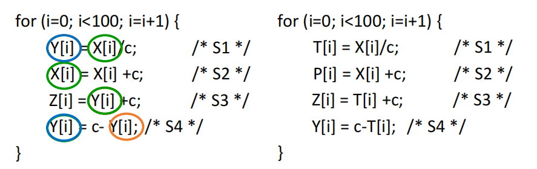
绿色：名相关
橙色：数据传递
蓝色：输出相关
MIMD: Tread-level Parallelism¶
线程级的并行，称为 TLP，是由软件系统来确认的。
The threads consist of hundreds to millions of instructions that may be executed in parallel.
粒度从单条指令变成了线程。
我们的发展从 ILP，到 TLP，再到 MIMD。
Multi-processor system 可以分为两大类：
-
based on shared memory
系统中只有唯一的地址空间，所有进程共享。
并不代表只有一个物理上的内存，实际上可以通过一块物理共享的内存实现，也可以通过分布式的内存实现。
-
based on message passing
每个处理器都有自己的地址空间（有自己的权限管理），通过消息传递来通信、传送数据。
Shared Memory System¶

可以把共享内存划分为若干块，他们共同构成一个拼图（即统一的地址空间）。
有一个统一的操作系统（操作系统唯一），负责管理所有的信息、内存，给不同的进程使用内存。
If in a system, each CPU has equal access to all memory modules and input/output devices, and these CPUs are interchangeable in the operating system, then the system is a symmetric multiprocessor system SMP (Symmetric Multi-processor).
Message Passing System¶

每一个进程都有自己的内存，通过 ICN 来传递信息，可以共同完成任务。
一般每个进程有自己的 OS，但是组合在一起形成一个大的系统。
Communication in the system is achieved by using an interconnection network to pass messages.
可以分层次，ICN 也可以连接其他的 ICN，结点里可以是另一个多机系统。

MIMD Architecture¶
-
Different memory access models of MIMD multiprocessor system
- Uniform Memory Access (UMA)
- Non Uniform Memory Access (NUMA)
- Cache Only Memory Access (COMA)
-
Further division of MIMD multi-computer system
- Massively Parallel Processors (MPP)
- Cluster of Workstations(COW)
UMA¶

所有的物理存储器，由所有的进程一起使用，均匀共享，即没有进程对某个存储器有特殊的访问权限，访问的时间相同，即不存在谁离谁更近的问题。
进程可以有自己的拓展，比如 cache、IO、local memory。
因为他的高度共享性，UMA 也叫紧耦合系统。
- Physical memory is uniformly shared by all processors.
- It takes the same time for all processors to access any memory word.
- Each processor can be equipped with private cache or private memory.
Example

每个CPU也可以有自己的私有内存和cache
NUMA¶

对某个进程都自己的 local memory，由 ICN 连起来。被共享的存储器是不均匀的。访问自己的 local memory 最快，访问别人的慢。
进程也可以有自己的拓展。
NUMA 有两种拓展，
- NC-NUMA: Non Cache NUMA 没cache
-
CC-NUMA: Coherent Cache NUMA 有cache
有自己的 cache 和目录，存在 cache 一致性的问题。当有一个数据改了，如何保证其他 cache 里的数据的正确性。多个cache从表现上不存在内存的不统一，好像只有一个cache一样。

- All CPUs share an uniform address space
- Use LOAD and STORE instructions to access remote memory
- Access to remote memory is slower than access to local memory
- The processor in the NUMA system can use cache
UMA and NUMA
- UMA is also called symmetric (shared-memory) multiprocessors (SMP) or centralized shared-memory multiprocessors.
- NUMA is called distributed shared-memory multiprocessor (DSP).

可以看到 UMA 有 shared cache，因此一致性是保证的。
COMA¶

COMA 是 NUMA 模型的特例，每个进程之间不存在层次关系，可以组成一个全局的 cache。可以通过一个目录。

- COMA is a special case of NUMA. There is no storage hierarchy in each processor node, and all caches form a uniform address space.
- Use the distributed cache directory for remote cache access. When using COMA, the data can be allocated arbitrarily at the beginning, because it will eventually be moved to the place where it is used at runtime.
Cache Coherence¶
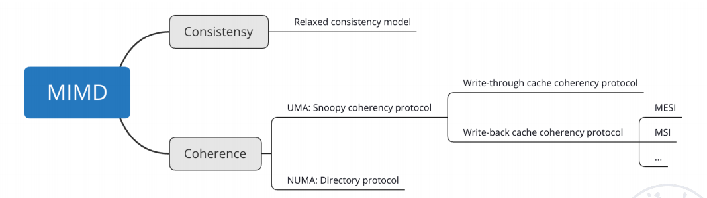
Memory Consistency VS Cache Coherence¶
在Memory Consistency中，对一组先写后读的指令先读后写是错误的，需要保证指令执行的顺序性。Need Memory Consistency Model
In modern parallel computers, processors often have Cache. One memory data may have multiple copies in the entire system. This leads to the Cache coherence problem.
可能有多个 cache，都放有内存拷贝的数据，可能不一致。我们一般通过一个协议来约定。Need Cache Coherence Protocol
- Bus snooping protocol
- Directory based protocol
协议主要是为了保证 cohrence 和 consistency.
-
Coherence
读数据，读出来的一定是最新的数据（即刚被写过的值）。
-
Consistency
写一个值时，要把写的值返回（通过读指令），什么时候返回。
Coherence的保障¶
- A Write-Through cache with No-Write Allocation
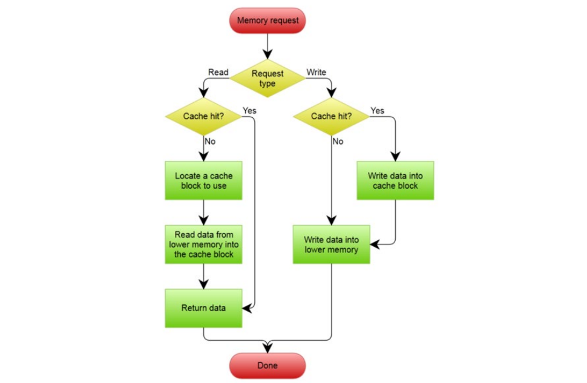
- A Write-Back cache with Write Allocation
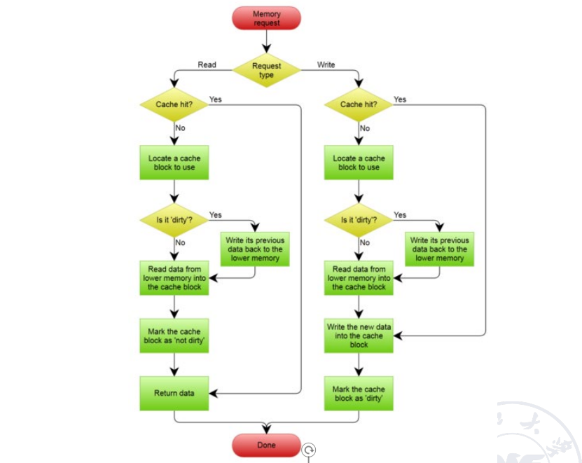
对于一致性协议，主要分为两大类：
- 总线监听协议 - Snoopy coherence protocols - For UMA
- 共享目录协议 - Directory protocol - For NUMA
使用有限状态机管理cache的状态，例如什么时候被更新，加入保持一致性的状态转化
MSI protocol：
- Invalid
- Shared
- Modified
Snoopy Coherence Protocols¶
For UMA, the cache coherence problem is solved by the snoopy protocol.
对于 write-through 和 write-back，我们有不同的解决方案。
-
Write-through Cache Coherency Protocol
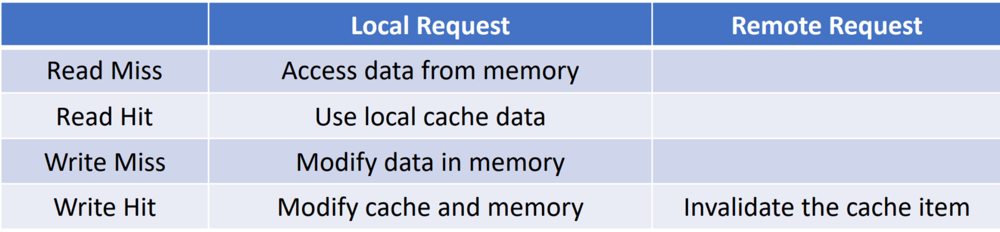
Write Invalidation Protocol
把块的状态分为
- Invalid
-
Shared
indicates that the block in the private cache is potentially shared.
-
Modified
indicates that the block has been updated in the private cache; implies that the block is exclusive.
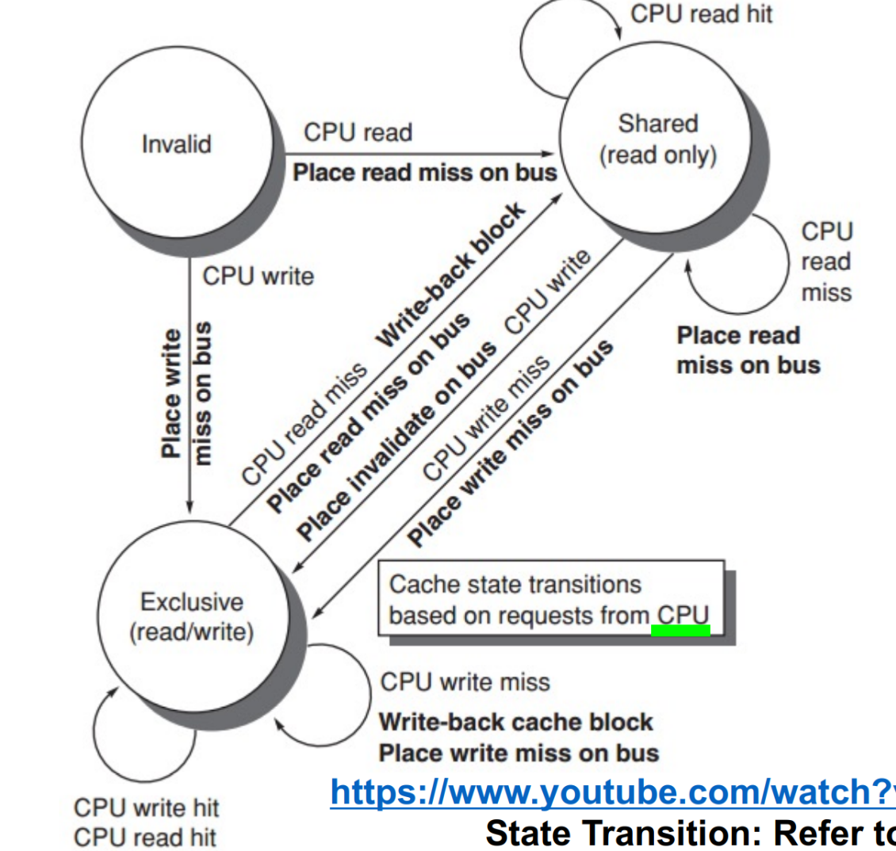
MSI 可以拓展为 MESI，多一个 exclusive。将其与 modified 区别开。 exclusive: indicates when a cache block is resident only in a single cache but is clean.
exclusive 时如果要读，就不能独占了，就会变为 shared。如果要写，就必须改为 modified。
MOESI
owned: indicates that the associated block is owned by that cache and out-of-date in memory.
Modified -> Owned without writing the shared block to memory
MESI
-
Invalid: The data contained in the cache item is invalid.
这个 CPU 里的缓存数据已经无效了（即在其他 CPU 里被改过了，而且还没有共享），CPU读数据的时候，没法读。
-
Shared: This row of data exists in multiple cache items, and the data in the memory is the latest.
多个 CPU 中都有自己的缓存。
-
Exclusive: No other cache items include this row of data, and the data in memory is the latest.
只有在自己的 CPU 里缓存，但是没有被修改，与内存一致。（因此其他 CPU 要读就可以改为 shared）--- 此CPU是唯一有效版本。
-
Modified: The data of the item is valid, but the data in the memory is invalid, and there is no copy of the data in other cache items.
被修改了。处于这个状态的数据只有在自己的 CPU 里才有缓存，这个时候还没有更新到内存里。
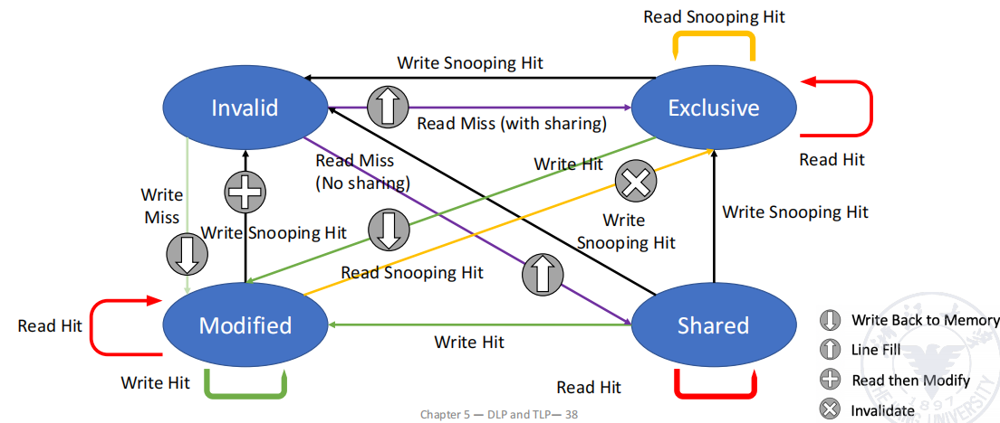
Example
假设有两个 CPU。本地发一个 local write 的请求，如果发现所有 cache 中都没有这个地址（初始是 invalid），A 要写，对应 cache line 的状态就会变为 modified。CPU B 来读，发出 remote read，就变为了 shared（A 和 B 的 cache line 都是 share 的）。
如果 A 想写，B 也想，同时 A 先发起写，那么 A 中的 cache line 就变为 invalid。（只要有别人在我后面写，就变为无效）
False sharing
本身两个线程之间的变量没有关系，但是在同一个cacheline里面，会导致cache的状态频繁切换，性能降低：
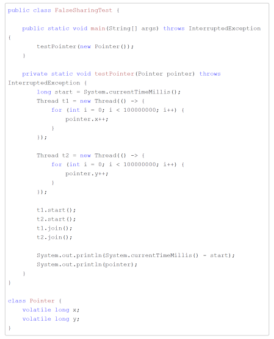 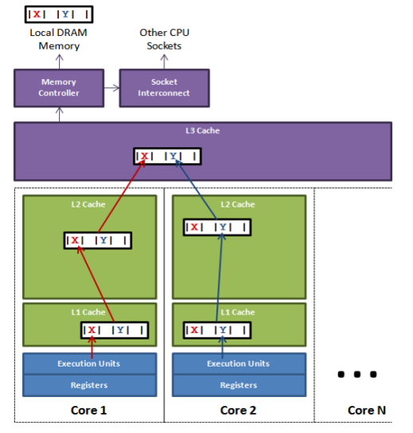
解决方式：
通过内存填充把两个变量分别放到两个cache：
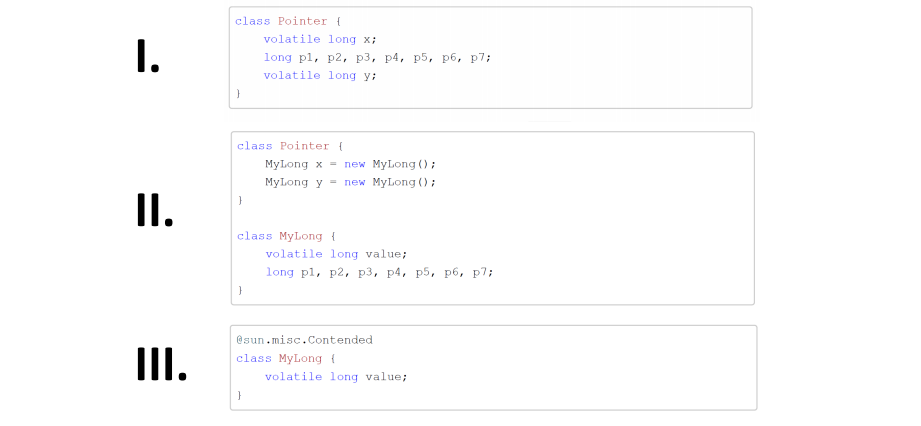
Memory Consistency
宽松一致性模型 Relaxed Consistency Models
读写允许乱序，需要同步信息（保证程序正确性）